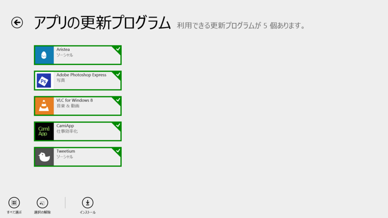
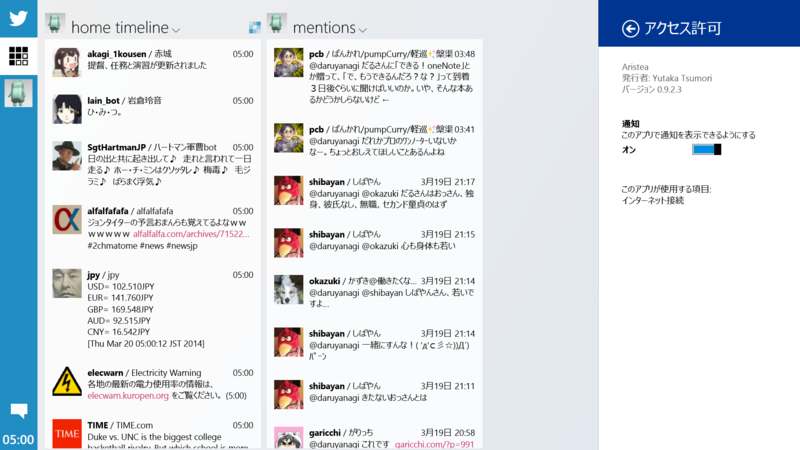
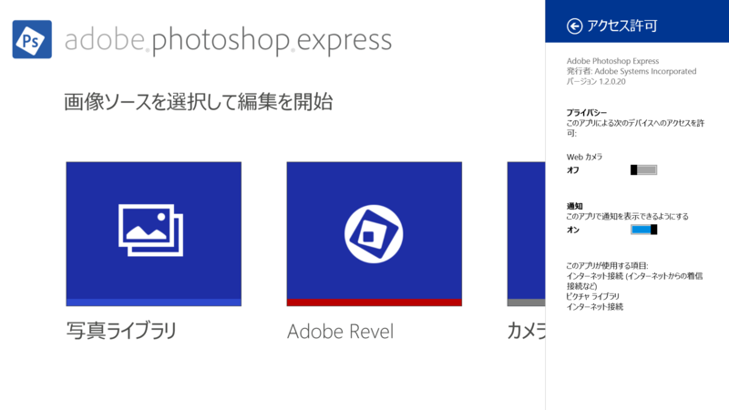
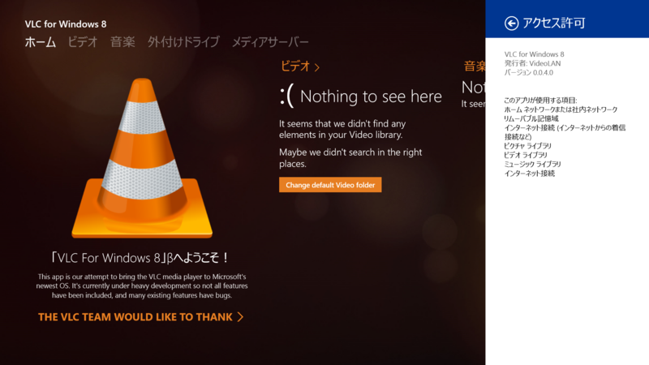
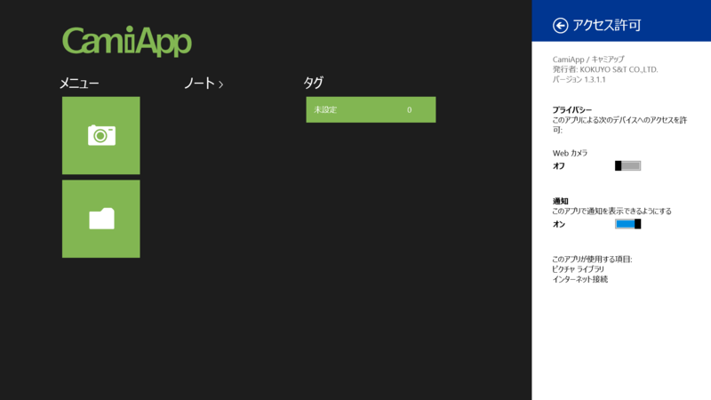
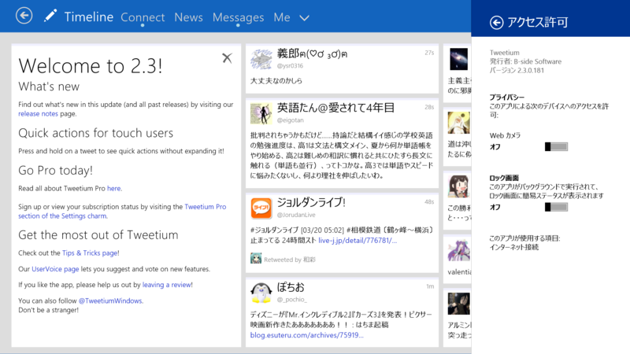
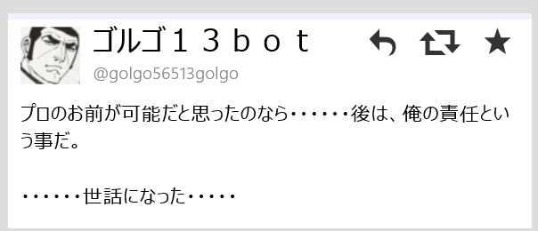
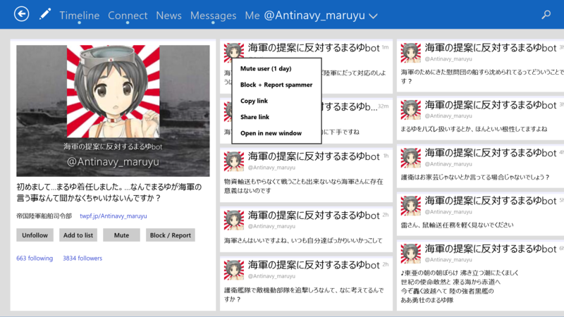

Aristea 0.9.2.3、Adobe Photoshop Express 1.2.0.20、VLC for Windows 8 0.0.4.0、CamiApp 1.3.1.1、Tweetium 2.3.0.181
執筆日時：

Aristea 0.9.2.3

v0.9.2
- 幅320px のスナップ表示に対応しました
- 写真のアップロードに対応しました
- カラムの並び替えに対応しました
- 使いやすさを向上しました
- いくつかのショートカットキーを追加しました
- 細かい不具合を修正しました
- 画像のインラインプレビューを修正しました
0.9.3 の変更は書いてなかった。そりゃそうだ。
Adobe Photoshop Express 1.2.0.20

- バグ修正
1.2.0.9 より。気付いてなかったけど、Adobe Photoshop Express って米国語と日本語しか出てなかったんだね。地味に日本が優遇されていた。
VLC for Windows 8 0.0.4.0

It should notably fix the crash on start, on some machines, but other stability issues, on the music side too!
Second build submitted to the store - Yet another blog for JBKempf
VideoLAN、「VLC for Windows 8」ベータ版を公開。「VLC」がWindows ストアアプリに - 窓の杜 （0.0.2.0）からの初めてのアップデート……と思ったけど、0.0.3.0（Version 2）があったみたいだね。
Version 2 of the VLC for Windows 8 application is now on the store... It should fix the startup crash.
Next release, during this week...
— VideoLAN (@videolan) 2014, 3月 17なんか画面に違和感があると思ったら、日本語がサポートされていた。まずフランス語をサポートしろよ！
CamiApp 1.3.1.1

―――――――――――――――――――――――
【お知らせ】[V1.3.1]
―――――――――――――――――――――――
■アクションマーカー対応
- アクションマーカーを使用すると、データ保存時に自動でタグ付けやクラウドサービスへのアップロードなどの動作を実行できます。
■対応クラウドサービス追加
- 「Evernote」に対応しました。
■タブレット端末対応
- Lenovo Miix 2 8
- Toshiba dynabook Tab VT484
※動作確認機種は随時更新予定
1.2.0.1 より。そのうち試してみようと思っていてそのままなのだけど、まずノートを手に入れねばならぬ。
Tweetium 2.3.0.181

v2.3
- Quick actions are now available to touch users by long-pressing on a tweet
- Added reply and delete quick actions
- RT and Favorite quick actions no longer appear on your own tweets
- You can now report a user as a spammer by right-clicking or long-pressing on their username and selecting "Block + Report as spammer"
- Quote Tweet now positions the caret at the start, rather than the end, of the text box
- Welcome and What's New sections now stay in the default view until dismissed by the user
- Fixed focus and scroll position loss in long DM threads after replying
- Fixed a rare case where the view could be left faded out (transparent) if the first request fails after resuming the app
- Fixed character count calculation for HTTPS URLs (was off by one)
- Attempting to minimize impact of a Windows HttpClient bug which causes rare crashes
- Improved handling of connection timeouts and service unavailable responses

ツイートの長押しでクイックアクション。リプライやリツイート、ふぁぼなんかができるみたい。あと、自分のツイートにクイックアクションが表示されなくなった。

スクリーンネームのコンテキストメニューからスパブロも。